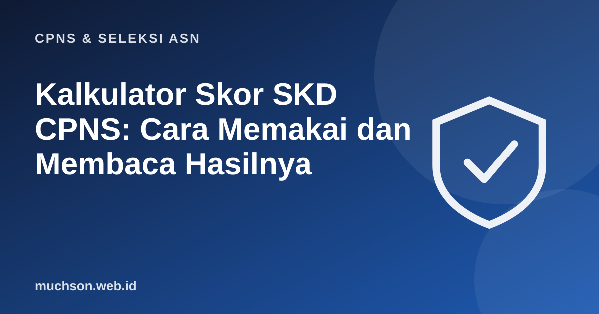

Beranda › Artikel › CPNS & Seleksi ASN
CPNS & Seleksi ASNKalkulator Skor SKD CPNS: Cara Memakai dan Membaca Hasilnya
Kalkulator skor SKD menjawab satu pertanyaan sederhana: apakah nilai Anda memenuhi ambang batas pada ketiga subtes? Jawaban itu penting, tetapi bukan jawaban akhir. Artikel ini menjelaskan cara memakainya, cara membaca margin, dan apa yang tidak bisa dihitung kalkulator, yaitu peringkat dan aturan formasi khusus.

Apa yang dihitung kalkulator
Kalkulator di LolosSeleksi menerima nilai TWK (maksimal 150), TIU (maksimal 175), dan TKP (maksimal 225), lalu menampilkan total SKD (maksimal 550) dan apakah ketiganya memenuhi ambang batas formasi umum seleksi terakhir: TWK 65, TIU 80, TKP 166. Jika ada yang kurang, kalkulator menyebut kekurangan tiap subtes. Perhitungan memakai pola skor resmi: TWK dan TIU bernilai 5 per jawaban benar, TKP bernilai 1 sampai 5 per opsi.
Cara membaca hasilnya: tiga skenario
| Skenario | TWK / TIU / TKP | Total | Arti |
|---|---|---|---|
| A. Total tinggi, satu subtes kurang | 120 / 75 / 200 (total 395) | 395 | Tidak memenuhi: TIU 75 di bawah 80, walau total tinggi |
| B. Total lebih rendah, semua memenuhi | 70 / 85 / 170 (total 325) | 325 | Memenuhi semua ambang batas; tinggal soal peringkat |
| C. Tipis di atas ambang | 65 / 80 / 166 (total 311) | 311 | Memenuhi, tetapi rawan terkena pemotongan peringkat |
Deskripsi teks diagram
- A: total tinggi tetapi TIU kurang: 395 poin
- B: total lebih rendah tetapi semua memenuhi: 325 poin
- C: tipis di atas ambang batas: 311 poin
Yang tidak dijawab kalkulator
- Peringkat. Peserta yang diumumkan lulus SKD paling banyak 3 kali kebutuhan jabatan berdasarkan peringkat tertinggi dari yang memenuhi ambang batas (Pasal 31 ayat 5 PermenPANRB 6/2024).
- Formasi khusus. Kalkulator memakai ambang batas formasi umum. Formasi khusus memiliki ketentuan berbeda; rangkuman media untuk 2024 menyebut, misalnya, cumlaude dan diaspora memakai TIU 85 dan formasi disabilitas serta daerah tertentu memakai TIU 60. Periksa keputusan yang berlaku pada seleksi Anda.
- Keputusan baru. Per 17 November 2026 saya belum menemukan keputusan ambang batas khusus CPNS 2026. KepmenPANRB 406/2026 yang terbit adalah untuk sekolah kedinasan (TKP 156), jadi jangan memakainya untuk CPNS.
- SKB dan nilai akhir. SKD hanya 40% dari nilai akhir; SKB 60% (Pasal 45).
Sebelum memakai angka ambang batas, periksa pengumuman resmi pada seleksi Anda. Aturan dapat berubah antartahun anggaran, dan yang berlaku adalah keputusan yang ditetapkan menteri untuk seleksi tersebut.
Menggunakan hasil untuk memutuskan belajar
- Masukkan skor tryout terakhir. Gunakan angka dari tryout bertimer, bukan perkiraan.
- Cari kekurangan terbesar. Subtes itulah prioritas.
- Naikkan margin, bukan hanya mencapai ambang batas. Karena ada pemotongan peringkat, skor yang tipis di atas ambang batas rawan.
- Ulangi tiap dua minggu. Lihat apakah kekurangan mengecil.
Pakai kalkulator skor SKD di LolosSeleksi setelah tryout SKD gratis untuk melihat posisi Anda terhadap ambang batas.
Tanya jawab
Apa ambang batas SKD CPNS yang dipakai kalkulator?
Kenapa total tinggi bisa tidak memenuhi?
Apakah kalkulator cocok untuk formasi khusus?
Apakah kalkulator menentukan kelulusan?
Berapa nilai maksimal SKD?
Referensi
- Rangkuman nilai ambang batas SKD CPNS 2024 (KepmenPANRB 321/2024), Okezone (membuka tab baru)
- Keputusan Menteri PANRB Nomor 406 Tahun 2026 tentang Nilai Ambang Batas SKD Sekolah Kedinasan (JDIH KemenPANRB, 27 Juli 2026) (membuka tab baru)
- Peraturan Menteri PANRB Nomor 6 Tahun 2024 tentang Pengadaan Pegawai ASN (teks resmi, BKN) (membuka tab baru)
- Detik: nilai ambang batas SKD CPNS 2024 (rangkuman formasi umum dan khusus) (membuka tab baru)